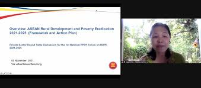
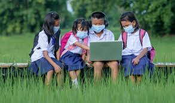

Dalam menjalani tujuan SDGs, kerjasama regional juga dibutuhkan untuk memenuhi tujuan SDGs dalam mengakhiri kemiskinan. Salah satu contoh kerjasama regional di dalam ASEAN yang mendukung dalam mengakhiri kemiskinan adalah dengan adanya (AFRDPE) ASEAN Framework for Rural Development and Poverty Eradication 2021-2025. Program ini adalah inisiatif regional yang dirancang oleh anggota-anggota kawasan ASEAN untuk mengurangi kemiskinan dan meningkatkan kesejahteraan masyarakat di negara-negara kawasan ASEAN. Program ini sangat membantu dan mendukung tujuan SDGs dalam mengakhiri kemiskinan. Dalam website program tersebut, mereka sempat menyinggung untuk mencapai SDGs. Tidak hanya dalam tujuan “Tanpa Kemiskinan”, namun juga beberapa tujuan SDGs seperti mencapai target pendidikan berkualitas (SDG4) serta industri, inovasi, dan infrastruktur (SDG9). Kemajuan yang baik telah dicapai dalam mencapai nol kelaparan (SDG2) serta kesehatan dan kesejahteraan yang baik (SDG3). Namun, masih banyak yang perlu dilakukan untuk mengurangi kesenjangan (SDG10), aksi iklim (SDG13), serta perdamaian, keadilan, dan lembaga yang kuat (SDG16).
.
Dalam mengakhiri kemiskinan, kawasan ASEAN sendiri memiliki kerjasama regional yang berfokus dalam pembangunan pedesaan yang berkelanjutan. Mereka ingin mengakhiri kemiskinan mulai dari daerah pedesaan terlebih dahulu, karena sebagian besar kemiskinan terjadi dalam pedesaan. Strategi yang mereka lakukan ini menunjukkan bahwa pengurangan kemiskinan di daerah yang besar dan global tidak akan tercapai kecuali kemiskinan di daerah pedesaan dikurangi terlebih dahulu. Kemiskinan menjadi hambatan dalam pembangunan kawasan ASEAN, sehingga mereka ingin mengakhiri segala bentuk kemiskinan dan mendukung tujuan SDGs.
Mereka mengadakan sebuah forum daring membahas tentang “Transformasi Digital untuk Pengentasan Kemiskinan” pada 18 Februari 2024. Dalam forum ini, Wakil Sekretaris Jenderal ASCC Ekkaphab Phanthavong membuka forum dengan menekankan perlunya inovasi dan solusi teknologi untuk penanggulangan kemiskinan dalam melanjutkan upaya ASEAN untuk tidak meninggalkan siapa pun. Pada forum daring ini, dihadirkan 4 pembicara yang berbagi wawasan mereka mengenai hubungan antara digitalisasi, pengentasan kemiskinan, dan pembangunan pedesaan di ASEAN.
.
Selama forum ini, mereka membahas peran penting pembangunan pedesaan dalam mencegah kesenjangan digital, keamanan siber, peningkatan keterampilan yang dibutuhkan tenaga kerja, meningkatkan ketahanan dan stabilitas di sektor pangan dan pertanian, pentingnya keuangan dalam upaya mengakhiri kemiskinan, dan keinginan untuk mengakhiri kemiskinan dengan memanfaatkan digitalisasi. Selain forum daring tersebut, beberapa kegiatan yang mereka lakukan selama program ini berjalan adalah:
.
Diambil dari buku ASEAN Framework Action Plan on Rural Development and Poverty Eradication 2021-2025 yang tersedia dalam website Peran Indonesia dalam kerjasama AFRDPE ini, Indonesia telah berperan dan berkontribusi banyak terhadap program ini. Dapat dibuktikan dari dalam buku ini bahwa Indonesia telah memberi pengetahuan ASEAN tentang pengembangan desa wisata, mengadakan berbagai workshop, mengadakan lokakarya regional tentang revitalisasi badan usaha milik desa, dan masih banyak peran Indonesia yang dilakukan dalam program tersebut.
.

